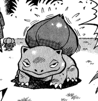
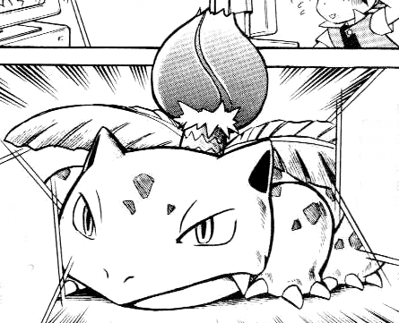

Aparición en el manga

En el cuento eléctrico del manga Pikachu.
En I'm Your Venusaur , Ash's Bulbasaur y Pikachu se hacen amigos de un Ivysaur salvaje que les cuenta la leyenda de un Venusaur de 300 años, que es el guardián local. Juntos buscan al Venusaur y derrotan al Equipo Rocket , quien intentó robarlo.
En el manga Pokémon Adventures.

Red tenía un Ivysaur apodado Saur que evolucionó de su Bulbasaur a su llegada a la ciudad de Celadon en Wartortle Wars . Se convirtió en Venusaur durante una batalla con el legendario híbrido de aves en Silph Co. en The Winged Legends .
Emerald alquiló un Ivysaur durante su desafío de Battle Factory en Pinsir Me, I Must Be Dreaming .
La Fábrica Batalla alquiló un Ivysaur, que fue robada por Guile escondite en bordeando Surskit I .
Un Ivysaur apareció en Facing Gulpin es difícil de tragar como un Pokémon de alquiler para la Fábrica de Batalla.
En Interrupting Ivysaur , un Ivysaur bajo la propiedad de un criador de Pokémon llamado Leonardo apareció durante el desafío de Platinum en Battle Arcade .
Más sobre Ivysaur (manga)...